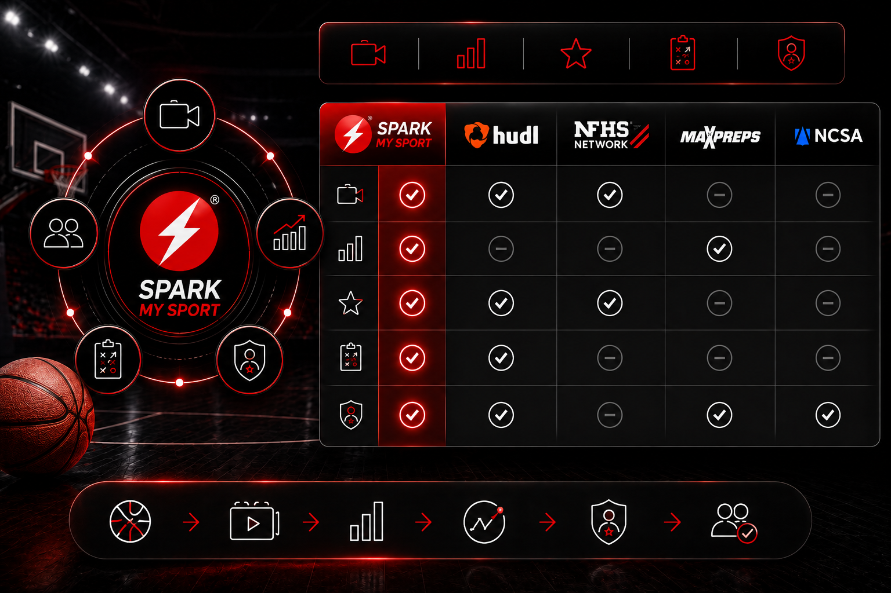

See where Spark My Sport fits alongside game-film, streaming, statistics, and recruiting platforms and why connecting those workflows matters.

This comparison reflects the market-comparison content already used in Spark My Sport's website materials. Product capabilities can change, so confirm vendor-specific features when making a purchase decision.
| Feature | Hudl | NFHS Network | MaxPreps | NCSA | |
|---|---|---|---|---|---|
| Primary Focus | Complete athlete development, collaboration, AI, recruiting, coaching & social engagement | Game film & coaching | Live streaming | Team records & statistics | College recruiting connections |
| Video Recording | Any smartphoneParents, coaches, players, schools, or clubs | Camera-based workflowOr uploaded film | Professional live streaming | ✗ No | LimitedHighlight uploads |
| Game Film | ✓ | ✓ | ✓ | ✗ | Limited |
| Live Streaming | Optional mobile streaming | Limited | ✓ Primary focus | ✗ | ✗ |
| Statistics | AI + traditional box scoreCustomizable sport-specific stats | Traditional box score | Minimal | Traditional season statistics | Limited |
| Custom Statistics | ✓User-defined stat categories | Limited | ✗ | ✗ | ✗ |
| AI Analysis | ✓Player evaluation, scouting, development plans, rankings | Limited | ✗ | ✗ | Limited |
| Player Development Plans | ✓AI-generated individualized development | Limited | ✗ | ✗ | ✗ |
| Coach Collaboration | ✓Video, drawings, comments, feedback, teaching | ✓ | ✗ | ✗ | ✗ |
| Parent Collaboration | ✓Active participant throughout athlete journey | Limited | Viewer only | Limited | Limited |
| Player Collaboration | ✓Self-review, upload, share, improve | Limited | ✗ | ✗ | Profile only |
| Social Media Integration | ✓Auto-generated highlights & recruiting content | Limited | ✗ | ✗ | Limited |
| Recruiting Profile | ✓Automatically built & continuously updated | Limited | ✗ | Basic | ✓ Primary focus |
| College Coach Search | ✓Searchable AI profiles with stats, film & reports | Limited | ✗ | Limited | ✓ |
| Athlete Journey | Middle School → High School → Club → CollegeIn one continuous profile | Season based | Event based | Season based | Recruiting stage only |
| Schools & Clubs | ✓Shared collaborative platform | Team-centric | Streaming only | School records | ✗ No |
| Event Organizers | ✓Stats, leaderboards, reports, MVPs, rankings | Limited | Streaming | Limited | ✗ |
| Scouts | ✓Search, compare, AI scouting reports | Limited | ✗ | Limited | ✓ |
| Single Ecosystem | ✓Everything in one platform | Coaching ecosystem | Streaming ecosystem | Statistics ecosystem | Recruiting ecosystem |
Capture the game once, then use the connected film and data for player development, coaching, recruiting, program growth, and services.